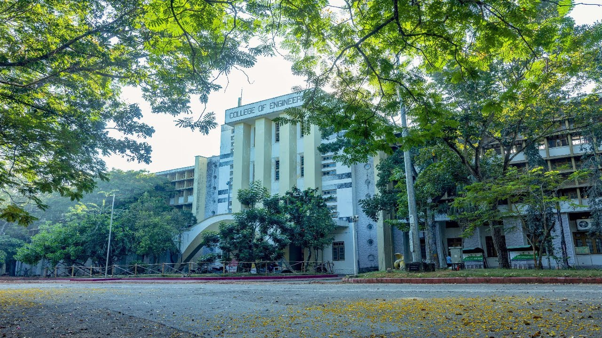
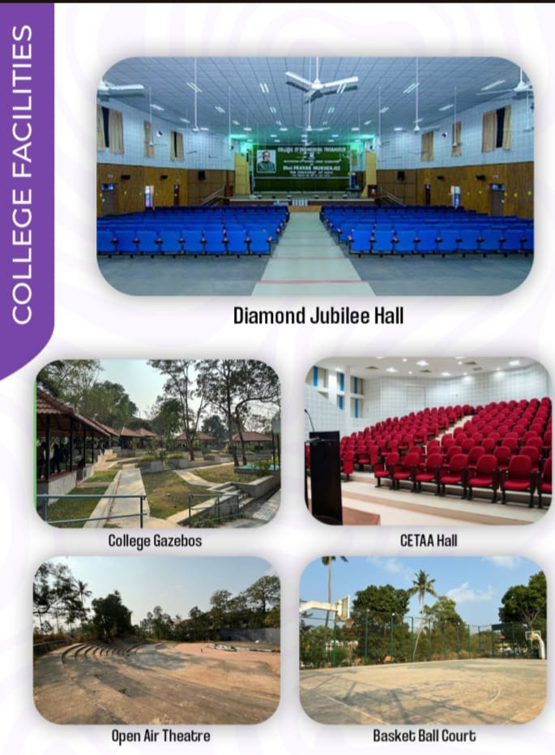
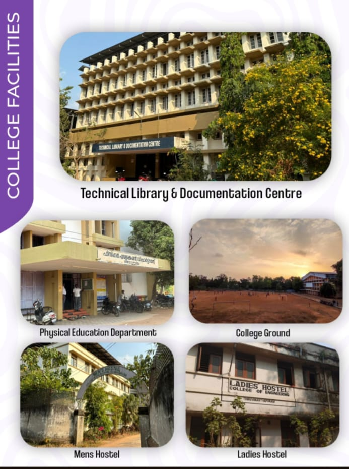
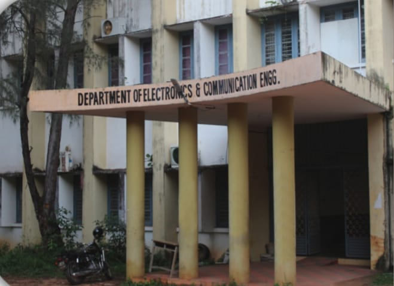
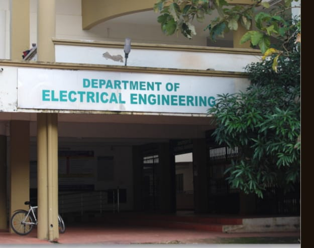
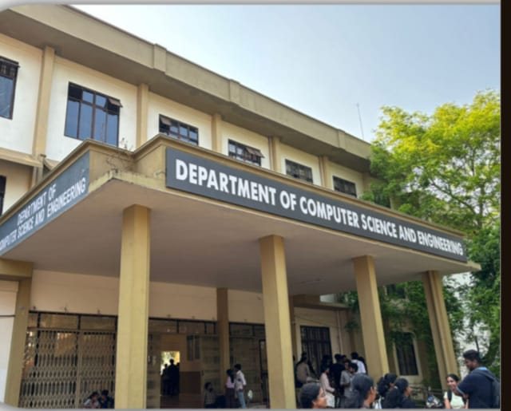
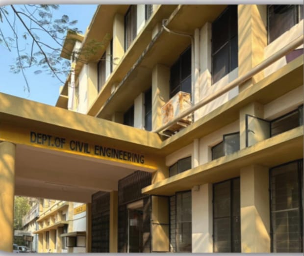
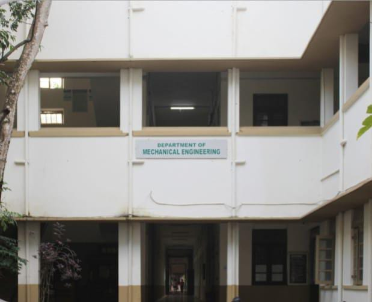
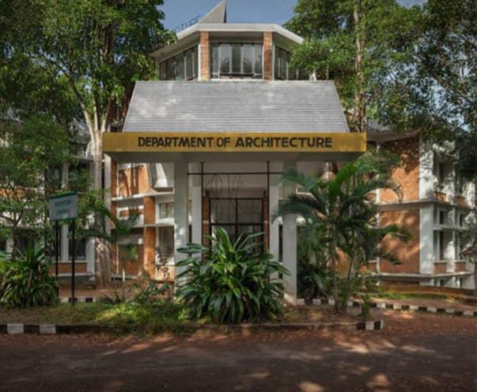

IN TO THE CET
The College of Engineering Trivandrum, commonly shortened to CET, is an engineering college in the Indian state of Kerala, situated in Thiruvananthapuram. Founded in 1939 by the Travancore monarch Chithira Thirunal, it is the state's oldest technical institution. It currently offers undergraduate, graduate and research programs in eight branches of engineering and has been affiliated to the APJ Abdul Kalam Technological University since 2015, prior to which it was part of the University of Kerala.
LOCATION
For Navigational Assistants
click hereMore about us:

IN TO THE CET
UG Programmes
ELECTRONICS AND COMMUNICATION ENGINEERING
- B.Tech in Electronics and Communication Engineering
- B.Tech in Applied Electronics and Instrumentation

Electrical and Electronics Department
- B.Tech in Electrical and Electronics Engineering
- B.TECH in Electrical and Computer Engineering

Computer Science and Engineering
- B.Tech in Computer Science and Engineering

Civil Department
- B.Tech in Civil Engineering

Mechanical Department
- B.Tech in Mechanical Engineering
- B.Tech in Industrial Engineering

Architecture Department
- B.Arch

Evening Degree Programmes
B.Tech for Working Professionals-
- Civil Engineering
- Mechanical Engineering
- Electrical and Electronics Engineering
IN TO THE CET
PG Programmes
Computer Application and IT
- MCA
- M.Tech Computer Science and Engineering
- M.Tech Information Security
Engineering and Architecture
- M.Tech Structural Engineering
- M.Tech Applied Electronics and Instrumentation
- M.Tech Artificial Intelligence
- M.Tech Communication Systems
- M.Tech Control Systems
- M.Tech Electrical Machines
- M.Tech Environmental Engineering
- M.Tech Geotechnical Engineering
- M.Tech Guidance and Navigational Control
- M.Tech Hydraulics Engineering
- M.Tech Industrial Engineering
- M.Tech Machine Design
- M.Tech Manufacturing and Automation
- M.Tech Micro and Nano Electronics
- M.Tech Power Electronics
- M.Tech Power Systems
- M.Tech Propulsion Engineering
- M.Tech Robotics and Automation
- M.Tech Signal Processing
- M.Tech Thermal Science
- M.Arch Environmental Design
- M.Arch Urban Design
- M.Plan Housing
Management and Business Administration
- MBA
- M.Tech Financial Engineering
Science
- M.Tech Geoinformatics
- M.Tech Renewable Energy
IN TO THE CET
Doctorate
Engineering and Architecture
- Ph.D Computer Science Engineering
- Ph.D Civil Engineering
- Ph.D Electrical Engineering
- Ph.D Electronics and Communication Engineering
- Ph.D Industrial Engineering
- Ph.D Mechanical Engineering
Management and Business Administration
- Ph.D Business Administration
IN TO THE CET
Students Club/Organizations
College of Engineering Thiruvananthapuram has 36 Officially recognized student clubs ranging from technical to non-technical. They are:
- 1.IEE SB CET
- IEEE activities in CET were initiated on 15 June 1983 as student branch under the Kerala section. In 2000, it hosted the Student Professional Awareness Conference (SPAC 2000) in Technopark with many notable speakers from the Information Technology domain. It was revived in the year 2008. As of January 2012, CET IEEE Student Branch has around 100 student members. The Student Branch has a library. One affinity group called IEEE Women in Engineering is running under this Student Branch and six societies. The student branch won many prizes as well as represented the college in many international avenues, including the best website award in the Asia Pacific region in 2010, represented Kerala in the Asia Pacific Student Congress at New Zealand, won prizes in the student poster and paper contest at the Global Humanitarian Technology conference at Seattle etc. The team of student branch officers consists of chair, vice-chair, treasurer and secretary.
- 2. SAEINDIA CET
- CET also has a student chapter of SAE- the Society of Automotive Engineers, the century-old society Thomas Alva Edison, Henry Ford and numerous other greats were members of. Students from CET have participated in SAE INDIA National competitions like the Baja and Efficycle. SAE INDIA CET regularly holds educative sessions on automotive technology- from bicycles and skateboards to trains and rockets. The student chapter also trains students in CAD. There are 4 clubs under SAEINDIA CET namely FARRAGO, Zenith, Excelerators & Herakles.
- 3. IET
- The Institution of Engineering and Technology is one of the world's leading professional societies for the engineering and technology community, with more than 160,000 members in 127 countries and offices in Europe, North America and Asia-Pacific. The Institution of Engineering and Technology Students chapter in College of Engineering was initiated in 2009. The IET CET has a library and an embedded systems research lab at the college. It has over 125 members in the college. The IET Chapter in the college won the Best Chapter Award under the Chennai Local Network in 2009. The chapter's activities include conducting workshops, seminars and technical competitions. Innovation Challenge is an annual event hosted by the chapter to ignite the innovation passion among the engineering Students of Kerala.
- 4. ISTE SC CET
- The Indian Society for Technical Education Student Chapter is the largest technical society in the college with more than 80% of the student body as its members.
- 5. RoboCET
- RoboCET is the robotics club of CET formed by a group of robotic enthusiasts among the students of the college. RoboCET was established in April 2008. The activities of this club include conducting classes, workshops and exhibitions on robotics. RoboCET has organised various robotics competitions inside and outside the college.
- 6.IEDC CET
- The Innovation & Entrepreneurship Development Cell (IEDC) is a fully functioning student body registered under the Technology Business Incubator (TBI) of the College of Engineering Trivandrum. The club provides a platform for students with ideas to convert them into business reality. The stated aim of IEDC is to foster a student start-up culture in the institution. Club activities include seminars by firms such as Blackberry, classes on the basics of the Stock Market, sponsorship activities, talks with prominent start up ventures and trips to events all over India like Hackathons and Entrepreneurship Conferences. The Cell, started in late 2011, already has 3 start-ups registered under it.
- 7.National Cadet Corps
- A Naval NCC unit was formed in 2020 under 1(K)naval battalion with allotted strength of 50 a year.
- 8.NSS CET
- The National Service Scheme primarily stands for channelising the student youth for building the nation. The youth in all ages has been in the vanguard of progress and social change. On 18 October 2006 NSS CET (with unit no. 147) was inaugurated. NSS is now the most active organisation in the college. NSS cet is now capable of conducting even more than 25 programmes a year in midst of a busy academic schedule. Also from a bunch of students at the time of formation, the number of NSS volunteers is now more than a hundred. Also NSS cet is now an established one with a website and a special room for its activities. Last year NSS even came up with an alumni section, a rare thing for an organisation in college. As part of the new requirement of A.P.J. Kalam Technological University, a new unit of NSS was started.
- 9.CET BBC club
- BBC CET is a club that was an initiative of the CET Alumni Association. Founded on 30 October 2020, the club aims to empower and uplift students in any way that the students require, primarily through confidence-building activities and other sessions.
- 10.Innovation Centre
- The Innovation Centre is a lab facility operated for the students by the students of CET. It was established in May 2012 and has become the den of geeks and Greeks in the college. Unlike most other technical organisations in the college, Innovation centre is government funded (by CERD). The Innovation Centre is open 24 x 7, with supervision. The facility also organises talks and training sessions in technical activities and also acts as a think tank where students meet to discuss their ideas on technical advances. In addition to it activities within the college, Innovation Centre CET hosts EUREKA, a statewide project competition annually. It is also a guidance center where students get advice and help for their projects and tech related activities. Working in unison with the IPR cell and the Technology Business Incubation (TBI) facility, the Innovation Centre also helps students in patenting and marketing the technologies they develop.
- 11.CET Quiz Club
- CET Quiz Club is one of the oldest and most active club in CET. CET QC conducts weekly informal sessions and other regular quizzing events in college. The club also organizes the inter college and open quiz competitions during Dhwani (Cultural fest) and Drishti (Tech fest), among others. One of the most awaited annual quizzing event, Eroteme, is conducted by the QC and attended by quizzers in and out of the state. Quiz Master Major Chandrakant Nair has hosted all 4 editions of Eroteme.
- 12.CET Film Society
- The official film club of College of Engineering Trivandrum, which conducts student film festivals, panel discussions, film reviews, short film competitions, etc. in the college. The club has an active presence among the students through the social media.
- 13.H2O CET
- H2O CET is the official CET student wing of Helping Hands Organisation, NGO based out of Thiruvananthapuram, that focuses on autism and disability Rehabilitation along with providing holistic education to underprivileged children. With a volunteer strength of more than 100, many college level events are organized for fund raising for the NGO. Along with that student volunteers take active participation in weekly classes and elderly help initiatives.
- 14.LitSoc CET
- LitSoCET, short for Literary Society CET facilitates the literary and debate aspirations of students. The annual literary fest, Carpe Dictum is organised as a part of Dhwani. Litsoc also organises MUNs on an annual basis.
- 15.CETalks
- CETALKS is the original in- house talk show of College of Engineering, Thiruvananthapuram. It was a talk series program that was founded in January 2015 during the 75th anniversary celebrations of the college. Cetalks is also the name of the college's official radio. New shows are aired occasionally at 9 pm on weekends.
- 16.CET Shutterbugs
- The official photography club of College of Engineering Thiruvananthapuram.
- 17.SCORE@CET
- It is the official research & publication club of CET.
- 18.AstroCET
- AstroCET, founded in 2019, is the astronomy club at the College of Engineering Trivandrum (CET).
- 19.AeroCET
- 20.Google Developer Student Club CET
- 21.IGS CET
- 22.ICI CET STUDENT CHAPTER
- 23.American society of civil engineers
- 24.Mathletes CET
- 25.TinkerHub CET
- 26.Amateur Radio Club
- 27.Malayalam Club CET
- 28.Under 25 CET
- 29.Coders Club
- 30.CHATURANGA CET
- 31.WATCH THE FREAKZ
- 32.Internship Cell CET
- 33.Intellectual Property Rights Cell
- 34.PRISM CET
- 35.CETunes
- 36.Investor CET